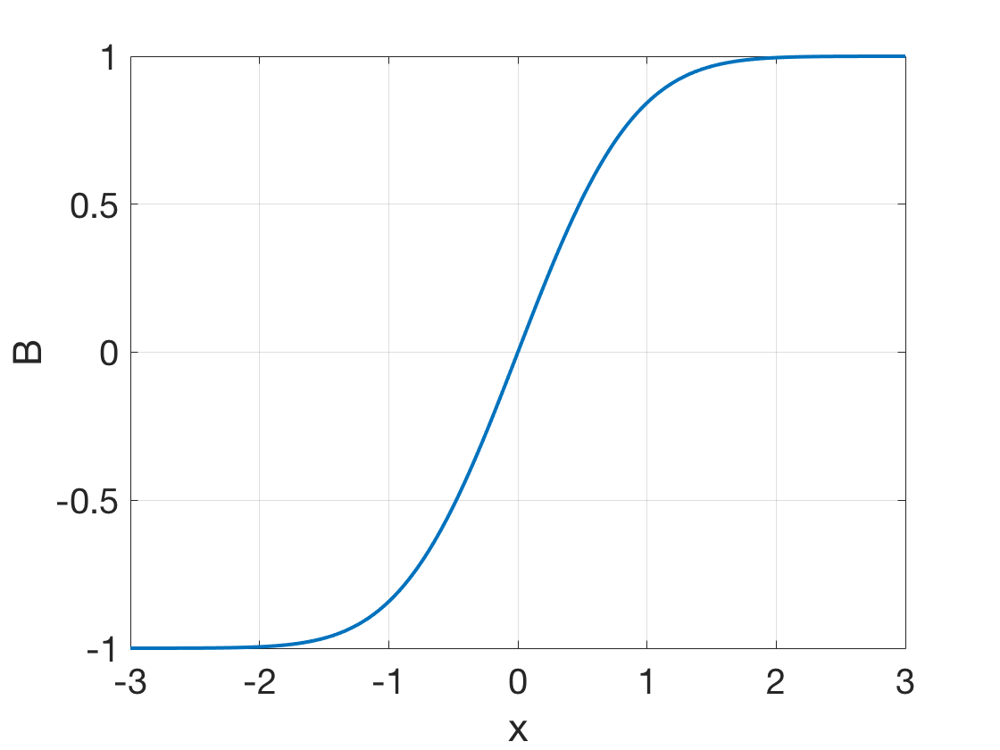
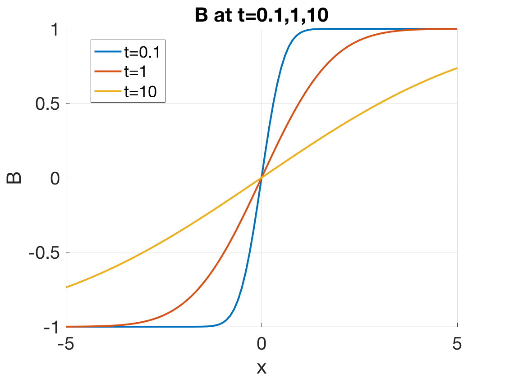

6 Diffusion and Resisvity
6.1 Diffusion and Mobility in Weakly Ionized Gases
The infinite, homogeneous plasmas assumed in the previous chapter for the equilibrium conditions are, of course, highly idealized. Any realistic plasma will have a density gradient, and the plasma will tend to diffuse toward regions of low density. For example, the central problem in controlled thermonuclear reactions is to impede the rate of diffusion by using a magnetic field. Before tackling the magnetic field problem, however, we shall consider the case of diffusion in the absence of magnetic fields. A further simplification results if we assume that the plasma is weakly ionized, so that charge particles collide primarily with neutral atoms rather than with one another. The case of a fully ionized plasma is deferred to a later section, since it results in a nonlinear equation for which there are few simple illustrative solutions. In any case, partially ionized gases are not rare: High-pressure arcs and ionospheric plasmas fall into this category, and most of the early work on gas discharges involved fractional ionizations between \(10^3\) and \(10^6\), when collisions with neutral atoms are dominant.
The picture, then, is of a nonuniform distribution of ions and electrons in a dense background of neutrals (Fig. 5.1 ADD IT!). As the plasma spreads out as a result of pressure-gradient and electric field forces, the individual particles undergo a random walk, colliding frequently with the neutral atoms. We begin with a brief review of definitions from atomic theory.
6.2 Collision Parameters
When an electron, say, collides with a neutral atom, it may lose any fraction of its initial momentum, depending on the angle at which it rebounds. In a head-on collision with a heavy atom, the electron can lose twice its initial momentum, since its velocity reverses sign after the collision. The probability of momentum loss can be expressed in terms of the equivalent cross section \(\sigma\) that the atoms would have if they were perfect absorbers of momentum.
In Fig. 5.2, electrons are incident upon a slab of area \(A\) and thickness \(\mathrm{d}x\) containing \(n_n\) neutral atoms per \(\text{m}^3\). The atoms are imagined to be opaque spheres of cross-sectional area \(\sigma\); that is, every time an electron comes within the area blocked by the atom, the electron loses all of its momentum. The number of atoms in the slab is \(n_n A \mathrm{d}x\). The fraction of the slab blocked by atoms is \(n_n A\sigma \mathrm{d}x / A = n_n \sigma \mathrm{d}x\). If a flux \(\Gamma\) of electrons is incident on the slab, the flux emerging on the other side is \(\Gamma^\prime = \Gamma(1-n_n \sigma \mathrm{d}x)\). Thus the change of \(\Gamma\) with distance is \(\mathrm{d}\Gamma/\mathrm{d}x = -n_n \sigma\Gamma\), or \[ \Gamma = \Gamma_0 e^{-n_n\sigma x} \equiv \Gamma_0 e^{-x/\lambda_m} \]
In a distance \(\lambda_m\), the flux would be decreased to \(1/e\) of its initial value. The quantity \(\lambda_m\) is the mean free path for collisions: \[ \lambda_m = 1/n_n\sigma \tag{6.1}\]
After traveling a distance \(\lambda_m\), a particle will have had a good probability of making a collision. The mean time between collisions, for particles of velocity \(v\), is given by \[ \tau = \lambda_m/v \] and the mean frequency of collisions is \[ \tau^{-1} = v/\lambda_m = n_n \sigma v \tag{6.2}\]
If we now average over particles of all velocities \(v\) in a Maxwellian distribution, we have what is generally called the collision frequency \(\nu\): \[ \nu = n_n \overline{\sigma v} \tag{6.3}\]
6.3 Diffusion Parameters
The fluid equation of motion including collisions is, for any species \(s\), \[ mn\frac{\mathrm{d}\mathbf{v}}{\mathrm{d}t} = mn \Big[ \frac{\partial\mathbf{v}}{\partial t} + (\mathbf{v}\cdot\nabla)\mathbf{v} \Big] = q_sn\mathbf{E} - \nabla p - mn\nu\mathbf{v} \]
The averaging process used to compute \(\nu\) is such as to make the last equation correct; we need not be concerned with the details of this computation. The quantity \(\nu\) must, however, be assumed to be a constant in order for the equation to be useful. We shall consider a steady state in which \(\partial\mathbf{v}/\partial t\) = 0. If \(\mathbf{v}\) is sufficiently small (or \(\nu\) sufficiently large), a fluid element will not move into regions of different \(\mathbf{E}\) and \(\nabla p\) in a collision time, and the convective derivative \(\mathrm{d}\mathbf{v}/\mathrm{d}t\) will also vanish. Setting the left-hand side to zero, we have, for an isothermal plasma, \[ \mathbf{v} = \frac{1}{mn\nu}(q_sn\mathbf{E} - k_B T \nabla n) = \frac{q_s}{m\nu}\mathbf{E} - \frac{k_B T}{mv}\frac{\nabla n}{n} \]
The coefficients above are called the mobility and the diffusion coefficient: \[ \mu\equiv |q|/m\nu\quad\text{Mobility} \tag{6.4}\]
\[ D\equiv k_B T/ m\nu\quad\text{Diffusion coefficient} \tag{6.5}\]
These will be different for each species. Note that \(D\) is measured in \(\text{m}^2/s\). The transport coefficients \(\mu\) and \(D\) are connected by the Einstein relation: \[ \mu = |q|D/k_B T \tag{6.6}\] With the help of these definitions, the flux \(\Gamma_s\) of the sth species can be written \[ \Gamma_s = n\mathbf{v}_s = \pm \mu_s n\mathbf{E} - D_s\nabla n \tag{6.7}\]
Fick’s law of diffusion is a special case of this, occurring when either \(\mathbf{E}=0\) or the particles are uncharged, so that \(\mu=0\): \[ \Gamma = -D\nabla n\quad\text{Fick's law} \]
This equation merely expresses the fact that diffusion is a random-walk process, in which a net flux from dense regions to less dense regions occurs simply because more particles start in the dense region. This flux is obviously proportional to the gradient of the density. In plasmas, Fick’s law is not necessarily obeyed. Because of the possibility of organized motions (plasma waves), a plasma may spread out in a manner which is not truly random.
6.4 Decay of a Plasma by Diffusion
6.4.1 Ambipolar Diffusion
We now consider how a plasma created in a container decays by diffusion to the walls. Once ions and electrons reach the wall, they recombine there. The density near the wall, therefore, is essentially zero. The fluid equations of motion and continuity govern the plasma behavior; but if the decay is slow, we need only keep the time derivative in the continuity equation. The time derivative in the equation of motion, will be negligible if the collision frequency \(\nu\) is large. We thus have \[ \frac{\partial n}{\partial t} + \nabla\cdot\Gamma_s = 0 \tag{6.8}\] with \(\Gamma_s\) given by Equation 6.7. It is clear that if \(\Gamma_i\) and \(\Gamma_e\) were not equal, a serious charge imbalance would soon arise. If the plasma is much larger than a Debye length, it must be quasineutral; and one would expect that the rates of diffusion of ions and electrons would somehow adjust themselves so that the two species leave at the same rate. How this happens is easy to see. The electrons, being lighter, have higher thermal velocities and tend to leave the plasma first. A positive charge is left behind, and an electric field is set up of such a polarity as to retard the loss of electrons and accelerate the loss of ions. The required \(\mathbf{E}\) field is found by setting \(\Gamma_i=\Gamma_e=\Gamma\). From @Equation 6.7, we can write \[ \Gamma = \mu_i n\mathbf{E} - D_i \nabla n = -\mu_e n\mathbf{E} - D_e\nabla n \]
\[ \mathbf{E} = \frac{D_i - D_e}{\mu_i + \mu_e}\frac{\nabla n}{n} \]
The common flux \(\Gamma\) is then given by \[ \begin{aligned} \Gamma &= \mu_i\frac{D_i - D_e}{\mu_i + \mu_e}\nabla n - D_i \nabla n \\ &=\frac{\mu_iD_i - \mu_iD_e - \mu_iD_i - \mu_eD_i}{\mu_i + \mu_e}\nabla n \\ &=-\frac{\mu_iD_e + \mu_eD_i}{\mu_i+\mu_e}\nabla n \end{aligned} \]
This is Fick’s law with a new diffusion coefficient \[ D_a \equiv \frac{\mu_iD_e + \mu_eD_i}{\mu_i+\mu_e} \tag{6.9}\] called the ambipolar diffusion coefficient. If this is constant, the continuity equation above becomes simply \[ \frac{\partial n}{\partial t} = D_a \nabla^2 n \tag{6.10}\]
The magnitude of Da can be estimated if we take \(\mu_e\gg\mu_i\). That this is true can be seen from Equation 6.4. Since \(\nu\) is proportional to the thermal velocity, which is proportional to \(m^{-1/2}\), \(\mu\) is proportional to \(m^{-1/2}\). Equation 6.4 and Equation 6.9 then give \[ D_a \approx D_i + \frac{\mu_i}{\mu_e}D_e = D_i + \frac{T_e}{T_i}D_i \]
For \(T_e = T_i\), we have \[ D_a \approx 2D_i \]
The effect of the ambipolar electric field is to enhance the diffusion of ions by a factor of two, and the diffusion rate of the two species together is primarily controlled by the slower species.
6.4.2 Diffusion in a Slab
The diffusion Equation 6.10 can easily be solved by the method of separation of variables. We let \[ n(\mathbf{r}, t) = T(t)S(\mathbf{r}) \]
whereupon Equation 6.10, with the subscript on \(D_a\) understood, becomes \[ \begin{aligned} S\frac{\mathrm{d}T}{\mathrm{d}t} &= DT\nabla^2 S \\ \frac{1}{T}\frac{\mathrm{d}T}{\mathrm{d}t} &= \frac{D}{S}\nabla^2 S \end{aligned} \]
Since the left side is a function of time alone and the right side a function of space alone, they must both be equal to the same constant, which we shall call \(-1/\tau\). The function \(T\) then obeys the equation \[ \frac{\mathrm{d}T}{\mathrm{d}t} = -\frac{T}{\tau} \tag{6.11}\]
with the solution \[ T = T_0 e^{-t/\tau} \]
The spatial part \(S\) obeys the equation \[ \nabla^2 S = -\frac{1}{D\tau} S \tag{6.12}\]
In slab geometry, this becomes \[ \frac{\mathrm{d}^2 S}{\mathrm{d}x^2} = -\frac{1}{D\tau}S \tag{6.13}\]
with the solution \[ S = A\cos\frac{x}{(D\tau)^{1/2}} + B\sin\frac{x}{(D\tau)^{1/2}} \tag{6.14}\]
We would expect the density to be nearly zero at the walls (Fig. 5.3 ADD IT!) and to have one or more peaks in between. The simplest solution is that with a single maximum. By symmetry, we can reject the odd (sine) term in Equation 6.14. The boundary conditions \(S=0\) at \(x=\pm L\) then requires \[ \frac{L}{(D\tau)^{1/2}} = \frac{\pi}{2} \] or \[ \tau = \Big( \frac{2L}{\pi} \Big)^2 \frac{1}{D} \]
Combining all the equations above, we have \[ n = n_0 e^{-t/\tau} \cos\frac{\pi x}{2L} \]
This is called the lowest diffusion mode. The density distribution is a cosine, and the peak density decays exponentially with time. The time constant \(\tau\) increases with \(L\) and varies inversely with \(D\), as one would expect.
There are, of course, higher diffusion modes with more than one peak. Suppose the initial density distribution is as shown by the top curve in Fig. 5.4 ADD IT. Such an arbitrary distribution can be expanded in a Fourier series: \[ n = n_0 \Big( \sum_l a_l\cos\frac{(l+\frac{1}{2})\pi x}{L} \sum_m b_m\sin\frac{m\pi x}{L} \Big) \]
We have chosen the indices so that the boundary condition at \(x=\pm L\) is automatically satisfied. To treat the time dependence, we can try a solution of the form \[ n = n_0 \Big( \sum_l a_l e^{-t/\tau_l}\cos\frac{(l+\frac{1}{2})\pi x}{L} \sum_m b_m e^{-t/\tau_m}\sin\frac{m\pi x}{L} \Big) \]
Substituting this into the diffusion Equation 6.10, we see that each cosine term yields a relation of the form \[ -\frac{1}{\tau_l} = -D\Big[ \Big(l+\frac{\pi}{2}\Big)\frac{\pi}{L} \Big]^2 \]
and similarly for the sine terms. Thus the decay time constant for the \(l\)th mode is given by \[ \tau_l = \Big[ \frac{L}{(l+\frac{1}{2})\pi} \Big]^2 \frac{1}{D} \]
The fine-grained structure of the density distribution, corresponding to large \(l\) numbers, decays faster, with a smaller time constant \(\tau_l\). The plasma decay will proceed as indicated in Fig. 5.4 ADD IT. First, the fine structure will be washed out by diffusion. Then the lowest diffusion mode, the simple cosine distribution of Fig. 5.3 ADD IT, will be reached. Finally, the peak density continues to decay while the plasma density profile retains the same shape.
I WANT TO DO A SIMULATION ON THIS! TRY METHODOFLINES.JL?
6.4.3 Diffusion in a Cylinder
The spatial part of the diffusion equation, eq-diffusion_spatial, reads, in cylindrical geometry, \[ \frac{\mathrm{d}^2 S}{dr^2} + \frac{1}{r}\frac{dS}{dr} + \frac{1}{D\tau}S = 0 \tag{6.15}\]
This differs from Equation 6.13 by the addition of the middle term, which merely accouts for the change in coordinates. The need for the extra term is illustrated simply in Fig. 5.5 ADD IT. If a slice of plasma in (a) is moved toward larger x without being allowed to expand, the density would remain constant. On the other hand, if a shell of plasma in (b) is moved toward larger \(r\) with the shell thickness kept constant, the density would necessarily decrease as \(1/r\). Consequently, one would expect the solution to Equation 6.15 to be like a damped cosine (Fig. 5.6 ADD IT). This function is called a Bessel function of order zero, and eq-diffusion_spatial_cylinder is called Bessel’s equation (of order zero). Instead of the symbol cos, it is given the symbol \(J_0\). The function \(J0(r/[D\tau]^{1/2})\) is a solution to eq-diffusion_spatial_cylinder, just as \(\cos[x/(\mathrm{d}\tau)^{1/2}]\) is a solution to eq-diffusion_spatial. Both \(\cos kx\) and \(J_0(kr)\) are expressible in terms of infinite series.
FIGURE: Motion of a plasma slab in rectilinear and cylindrical geometry, illustrating the difference between a cosine and a Bessel function.
To satisfy the boundary condition \(n=0\) at \(r=a\), we must set \(a/(D\tau)^{1/2}\) equal to the first zero of \(J_0\); namely, 2.4. This yields the decay time constant \(\tau\). The plasma again decays exponentially, since the temporal part of the diffusion equation, Equation 6.11, is unchanged. We have described the lowest diffusion mode in a cylinder. Higher diffusion modes, with more than one maximum in the cylinder, will be given in terms of Bessel functions of higher order, in direct analogy to the case of slab geometry.
6.5 Steady State Solutions
In many experiments, a plasma is maintained in a steady state by continuous ionization or injection of plasma to offset the losses. To calculate the density profile in this case, we must add a source term to the equation of continuity: \[ \frac{\partial n}{\partial t} - D\nabla^2 n = Q(\mathbf{r}) \]
The sign is chosen so that when \(Q\) is positive, it represents a source and contributes to positive \(\partial n/\partial t\). In steady state, we set \(\partial n/\partial t=0\) and are left with a Poisson-type equation for \(n(\mathbf{r})\).
6.5.1 Constant Ionization Function
In many weakly ionized gases, ionization is produced by energetic electrons in the tail of the Maxwellian distribution. In this case, the source term \(Q\) is proportional to the electron density \(n\). Setting \(Q=Zn\), where \(Z\) is the “ionization function”, we have \[ \nabla^2 n = -(Z/D)n \]
This is the same equation as that for S, Equation 6.12. Consequently, the density profile is a cosine or Bessel function, as in the case of a decaying plasma, only in this case the density remains constant. The plasma is maintained against diffusion losses by whatever heat source keeps the electron temperature at its constant value and by a small influx of neutral atoms to replenish those that are ionized.
6.5.2 Plane Source
We next consider what profile would be obtained in slab geometry if there is a localized source on the plane \(x=0\). Such a source might be, for instance, a slit-collimated beam of ultraviolet light strong enough to ionize the neutral gas. The steady state diffusion equation is then \[ \frac{\mathrm{d}^n}{\mathrm{d}x^2} = -\frac{Q}{D}\delta(0) \]
Except at \(x=0\), the density must satisfy \(\partial^2 n/\partial x^2=0\). This obviously has the solution (Fig. 5.7 ADD IT) \[ n = n_0 \Big( 1-\frac{|x|}{L} \Big) \]
The plasma has a linear profile. The discontinuity in slope at the source is characteristic of \(\delta\)-function sources.
6.5.3 Line Source
Finally, we consider a cylindrical plasma with a source located on the axis. Such a source might, for instance, be a beam of energetic electrons producing ionization along the axis. Except at \(r=0\), the density must satisfy \[ \frac{1}{r}\frac{\partial}{\partial r}\Big(r\frac{\partial n}{\partial r}\Big) = 0 \]
The solution that vanishes at \(r=a\) is \[ n = n_0 \ln(a/r) \]
The density becomes infinite at \(r=0\) (Fig. 5.8); it is not possible to determine the density near the axis accurately without considering the finite width of the source.
6.6 Recombination
When an ion and an electron collide, particularly at low relative velocity, they have a finite probability of recombining into a neutral atom. To conserve momentum, a third body must be present. If this third body is an emitted photon, the process is called radiative recombination. If it is a particle, the process is called three-body recombination. The loss of plasma by recombination can be represented by a negative source term in the equation of continuity. It is clear that this term will be proportional to \(n_en_i=n^2\). In the absence of the diffusion terms, the equation of continuity then becomes \[ \frac{\partial n}{\partial t} = -\alpha n^2 \]
The constant of proportionality \(\alpha\) is called the recombination coefficient and has units of \(\text{m}^3/\text{s}\). This is a nonlinear equation for \(n\). This means that the straightforward method for satisfying initial and boundary conditions by linear superposition of solutions is not available. Fortunately, it is such a simple nonlinear equation that the solution can be found by inspection. It is \[ \frac{1}{n(\mathbf{r},t)} = \frac{1}{n_0(\mathbf{r})} + \alpha t \] where \(n_0(\mathbf{r})\) is the initial density distribution. After the density has fallen far below its initial value, it decays reciprocally with time, \(n\propto 1/\alpha t\). This is a fundamentally different behavior from the case of diffusion, in which the time variation is exponential.
Figure 5.9 (ADD IT!) shows the results of measurements of the density decay in the afterglow of a weakly ionized H plasma. When the density is high, recombination, which is proportional to \(n^2\), is dominant, and the density decays reciprocally. After the density has reached a low value, diffusion becomes dominant, and the decay is thenceforth exponential.
6.7 Diffusion Across a Magnetic Field
The rate of plasma loss by diffusion can be decreased by a magnetic field; this is the problem of confinement in controlled fusion research. Consider a weakly ionized plasma in a magnetic field (fig-gyration_collision ADD IT!). Charged particles will move along \(\mathbf{B}\) by diffusion and mobility according to Equation 6.7, since \(\mathbf{B}\) does not affect motion in the parallel direction. Thus we have, for each species, \[ \Gamma_z = \pm\mu n E_z - D\frac{\partial n}{\partial z} \]
If there were no collisions, particles would not diffuse at all in the perpendicular direction — they would continue to gyrate about the same magnetic field line. There are, of course, particle drifts across \(\mathbf{B}\) because of electric fields or gradients in \(\mathbf{B}\), but these can be arranged to be parallel to the walls. For instance, in a perfectly symmetric cylinder (fig-drift_cylinder ADD IT!), the gradients are all in the radial direction, so that the guiding center drifts are in the azimuthal direction. The drifts would then be harmless.
FIGURE: A charged particle in a magnetic field will gyrate about the same line of force until it makes a collision. #fig-gyration_collision
FIGURE: Particle drifts in a cylindrically symmetric plasma column do not lead to losses.#fig-drift_cylinder
When there are collisions, particles migrate across \(\mathbf{B}\) to the walls along the gradients. They do this by a random-walk process (fig-diffusion_collision_neutral ADD IT!). When an ion, say, collides with a neutral atom, the ion leaves the collision traveling in a different direction. It continues to gyrate about the magnetic field in the same direction, but its phase of gyration is changed discontinuously. (The Larmor radius may also change, but let us suppose that the ion does not gain or lose energy on the average.)
FIGURE: Diffusion of gyrating particles by collisions with neutral atoms.#fig-diffusion_collision_neutral
The guiding center, therefore, shifts position in a collision and undergoes a random walk. The particles will diffuse in the direction opposite \(\nabla n\). The step length in the random walk is no longer \(\lambda_m\), as in magnetic-field-free diffusion, but has instead the magnitude of the Larmor radius \(r_L\). Diffusion across \(\mathbf{B}\) can therefore be slowed down by decreasing \(r_L\); that is, by increasing B.
To see how this comes about, we write the perpendicular component of the fluid equation of motion for either species as follows:
6.7.1 Ambipolar Diffusion Across B
Because the diffusion and mobility coefficients are anisotropic in the presence of a magnetic field, the problem of ambipolar diffusion is not as straightforward as in the \(B = 0\) case. Consider the particle fluxes perpendicular to \(\mathbf{B}\) (Fig. 5.13 ADD IT!). Ordinarily, since \(\Gamma_{e\perp}\) is smaller than \(\Gamma_{i\perp}\), a transverse electric field would be set up so as to aid electron diffusion and retard ion diffusion. However, this electric field can be short-circuited by an imbalance of the fluxes along \(\mathbf{B}\). That is, the negative charge resulting from \(\Gamma_{e\perp} < \Gamma_{i\perp}\) can be dissipated by electrons escaping along the field lines. Although the total diffusion must be ambipolar, the perpendicular part of the losses need not be ambipolar. The ions can diffuse out primarily radially, while the electrons diffuse out primarily along \(\mathbf{B}\). Whether or not this in fact happens depends on the particular experiment. In short plasma columns with the field lines terminating on conducting plates, one would expect the ambipolar electric field to be short-circuited out. Each species then diffuses radially at a different rate. In long, thin plasma columns terminated by insulating plates, one would expect the radial diffusion to be ambipolar because escape along \(\mathbf{B}\) is arduous.
Mathematically, the problem is to solve simultaneously the continuity Equation 6.8 for ions and electrons. It is not the fluxes \(\mathbf{\Gamma}_j\), but the divergence \(\nabla\cdot\mathbf{\Gamma}_j\) which must be set equal to each other. Separating \(\nabla\cdot\mathbf{\Gamma}_j\) into perpendicular and parallel components, we have \[ \begin{aligned} \nabla\cdot\mathbf{\Gamma}_i &= \nabla_\perp\cdot(\mu_i n \mathbf{E}_\perp - D_{i\perp}\nabla n) + \frac{\partial}{\partial z}\Big( \mu_inE_z - D_i\frac{\partial n}{\partial z} \Big) \\ \nabla\cdot\mathbf{\Gamma}_e &= \nabla_\perp\cdot(\mu_e n \mathbf{E}_\perp - D_{e\perp}\nabla n) + \frac{\partial}{\partial z}\Big( -\mu_enE_z - D_e\frac{\partial n}{\partial z} \Big) \end{aligned} \]
The equation resulting from setting \(\nabla\cdot\mathbf{\Gamma}_i = \nabla\cdot\mathbf{\Gamma}_e\) cannot easily be separated into one-dimensional equations. Furthermore, the answer depends sensitively on the boundary conditions at the ends of the field lines. Unless the plasma is so long that parallel diffusion can be neglected altogether, there is no simple answer to the problem of ambipolar diffusion across a magnetic field.
6.8 Collisions in Fully Ionized Plasmas
When the plasma is composed of ions and electrons alone, all collisions are Coulomb collisions between charged particles. However, there is a distinct difference between
- collisions between like particles (ion–ion or electron–electron collisions) and
- collisions between unlike particles (ion–electron or electron–ion collisions).
Consider two identical particles colliding (Fig. 5.16 ADD IT!). If it is a head-on collision, the particles emerge with their velocities reversed; they simply interchange their orbits, and the two guiding centers remain in the same places. The result is the same as in a glancing collision, in which the trajectories are hardly disturbed. The worst that can happen is a \(90^\circ\) collision, in which the velocities are changed \(90^\circ\) in direction. The orbits after collision will then be the dashed circles, and the guiding centers will have shifted. However, it is clear that the “center of mass” of the two guiding centers remains stationary. For this reason, collisions between like particles give rise to very little diffusion. This situation is to be contrasted with the case of ions colliding with neutral atoms. In that case, the final velocity of the neutral is of no concern, and the ion random-walks away from its initial position. In the case of ion–ion collisions, however, there is a detailed balance in each collision; for each ion that moves outward, there is another that moves inward as a result of the collision.
When two particles of opposite charge collide, however, the situation is entirely different (Fig. 5.17 ADD IT!). The worst case is now the \(180^\circ\) collision, in which the particles emerge with their velocities reversed. Since they must continue to gyrate about the magnetic field lines in the proper sense, both guiding centers will move in the same direction. Unlike-particle collisions give rise to diffusion. The physical picture is somewhat different for ions and electrons because of the disparity in mass. The electrons bounce off the nearly stationary ions and random-walk in the usual fashion. The ions are slightly jostled in each collision and move about as a result of frequent bombardment by electrons. Nonetheless, because of the conservation of momentum in each collision, the rates of diffusion are the same for ions and electrons, as we shall show.
6.8.1 Plasma Resistivity
The fluid equations of motion including the effects of charged-particle collisions may be written as follows \[ \begin{aligned} m_i n\frac{\mathrm{d}\mathbf{v}_i}{\mathrm{d}t} &= en(\mathbf{E}+\mathbf{v}_i\times\mathbf{B}) - \nabla p_i -\nabla\cdot\pmb{\pi}_i + \mathbf{P}_{ie} \\ m_e n\frac{\mathrm{d}\mathbf{v}_e}{\mathrm{d}t} &= -en(\mathbf{E}+\mathbf{v}_e\times\mathbf{B}) - \nabla p_e -\nabla\cdot\pmb{\pi}_e + \mathbf{P}_{ei} \end{aligned} \tag{6.16}\]
The terms \(\mathbf{P}_{ie}\) and \(\mathbf{P}_{ei}\) represent, respectively, the momentum gain of the ion fluid caused by collisions with electrons, and vice versa. The stress tensor \(\mathbf{P}_j\) has been split into the isotropic part \(p_j\) and the anisotropic viscosity tensor \(\pmb{\pi}_j\). Like-particle collisions, which give rise to stresses within each fluid individually, are contained in \(\pmb{\pi}_j\). Since these collisions do not give rise to much diffusion, we shall ignore the terms \(\nabla\cdot\pmb{\pi}_j\). As for the terms \(\mathbf{P}_{ie}\) and \(\mathbf{P}_{ei}\), which represent the friction between the two fluids, the conservation of momentum requires \[ \mathbf{P}_{ie} = -\mathbf{P}_{ei} \]
We can write \(\mathbf{P}_{ei}\) in terms of the collision frequency in the usual manner: \[ \mathbf{P}_{ei} = mn(\mathbf{v}_i - \mathbf{v}_e)\nu_{ei} \]
and similarly for \(\mathbf{P}_{ie}\). Since the collisions are Coulomb collisions, one would expect \(\mathbf{P}_{ei}\) to be proportional to the Coulomb force, which is proportional to \(e^2\) (for singly-charged ions). Furthermore, \(\mathbf{P}_{ei}\) must be proportional to the density of electrons \(n_e\) and to the density of scattering centers \(n_i\), which, of course, is equal to \(n_e\). Finally, \(\mathbf{P}_{ei}\) should be proportional to the relative velocity of the two fluids. On physical grounds, then, we can write \(\mathbf{P}_{ei}\) as \[ \mathbf{P}_{ei} = \eta e^2n^2(\mathbf{v}_i - \mathbf{v}_e) \tag{6.17}\]
where \(\eta\) is a constant of proportionality. Comparing this with the last equation, we see that \[ \nu_{ei} = \frac{ne^2}{m}\eta \tag{6.18}\]
The constant \(\eta\) is the specific resistivity of the plasma; that this jibes with the usual meaning of resistivity will become clear shortly.
6.8.2 Mechanics of Coulomb Collisions
When an electron collides with a neutral atom, no force is felt until the electron is close to the atom on the scale of atomic dimensions; the collisions are like billiard-ball collisions. When an electron collides with an ion, the electron is gradually deflected by the long-range Coulomb field of the ion. Nonetheless, one can derive an effective cross section for this kind of collision. It will suffice for our purposes to give an order-of-magnitude estimate of the cross section. In Fig. 5.18 ADD IT!, an electron of velocity \(\mathbf{v}\) approaches a fixed ion of charge \(e\). In the absence of Coulomb forces, the electron would have a distance of closest approach \(r_0\), called the impact parameter. In the presence of a Coulomb attraction, the electron will be deflected by an angle \(\chi\), which is related to \(r_0\). The Coulomb force is
FIGURE:Orbit of an electron making a Coulomb collision with an ion.#fig-coulomb_collision}
\[ F = -\frac{e^2}{4\pi\epsilon_0 r^2} \]
This force is felt during the time the electron is in the vicinity of the ion; this time is roughly \[ T \approx r_0 / v \]
The change in the electron’s momentum is therefore approximately \[ \Delta(mv) = |FT| \approx \frac{e^2}{4\pi\epsilon_0r_0v} \]
We wish to estimate the cross section for large-angle collisions, in which \(\chi \ge 90^\circ\). For a \(90^\circ\) collision, the change in \(mv\) is of the order of \(mv\) itself. Thus \[ \Delta(mv) \simeq mv \simeq e^2/4\pi\epsilon_0r_0v,\quad r_0 = e^2/4\pi\epsilon_0 mv^2 \tag{6.19}\]
The cross section is then \[ \sigma = \pi r_0^2 = e^4 / 16\pi\epsilon_0^2 m^2v^4 \]
The collision frequency is, therefore, \[ \nu_{ei} = n\sigma v = ne^4/16\pi\epsilon_0^2 m^2 v^3 \tag{6.20}\]
and the resistivity is \[ \eta = \frac{m}{ne^2}\nu_{ei} = \frac{e^2}{16\pi\epsilon_0^2 mv^3} \tag{6.21}\]
For a Maxwellian distribution of electrons, we may replace \(v^2\) by \(k_B T_e/m\) for our order-of-magnitude estimate: \[ \eta \approx \frac{\pi e^2m^{1/2}}{(4\pi\epsilon_0)^2 (k_B T_e)^{3/2}} \tag{6.22}\]
This is the resistivity based on large-angle collisions alone. In practice, because of the long range of the Coulomb force, small-angle collisions are much more frequent, and the cumulative effect of many small-angle deflections turns out to be larger than the effect of large-angle collisions. It was shown by Spitzer that Equation 6.22 should be multiplied by a factor \(\ln \Lambda\): \[ \eta\approx\frac{\pi e^2m^{1/2}}{(4\pi\epsilon_0)^2 (k_B T_e)^{3/2}}\ln\Lambda \tag{6.23}\] where \[ \Lambda = \overline{\lambda_D/r_0} = 12\pi n\lambda_D^3 \]
This factor represents the maximum impact parameter, in units of \(r_0\) as given by Equation 6.19, averaged over a Maxwellian distribution. The maximum impact parameter is taken to be \(\lambda_D\) because Debye shielding suppresses the Coulomb field at larger distances. Although \(\Lambda\) depends on \(n\) and \(k_BT_e\), its logarithm is insensitive to the exact values of the plasma parameters. Typical values of \(\ln \Lambda\) are given below (\(\lambda_D\) defined in Section 2.4).
| \(k_B T_e\,[\text{eV}]\) | \(n\,[\text{m}^{-3}]\) | \(\ln\Lambda\) | |
|---|---|---|---|
| \(0.2\) | \(10^{15}\) | 10.7 | (Q-machine) |
| \(2\) | \(10^{17}\) | 11.8 | (lab plasma) |
| \(100\) | \(10^{19}\) | 15.4 | (typical torus) |
| \(10^4\) | \(10^{21}\) | 20.0 | (fusion reactor) |
| \(10^3\) | \(10^{27}\) | 9.6 | (laser plasma) |
It is evident that \(\ln \Lambda\) varies only a factor of two as the plasma parameters range over many orders of magnitude. For most purposes, it will be sufficiently accurate to let \(\ln \Lambda=10\) regardless of the type of plasma involved.
6.8.3 Physical Meaning of η
Let us suppose that an electric field \(\mathbf{E}\) exists in a plasma and that the current that it drives is all carried by the electrons, which are much more mobile than the ions. Let \(B=0\) and \(k_BT_e=0\), so that \(\nabla\cdot\mathbf{P}_e=0\). Then, in steady state, the electron equation of motion from Equation 6.16 reduces to \[ en\mathbf{E} = \mathbf{P}_{ei} \tag{6.24}\]
Since \(\mathbf{j}=en(\mathbf{v}_i-\mathbf{v}_e)\), Equation 6.17 can be written \[ \mathbf{P}_{ei} = \eta en\mathbf{j} \] so that Equation 6.24 becomes \[ \mathbf{E} = \eta\mathbf{j} \tag{6.25}\]
This is simply Ohm’s law, and the constant \(\eta\) is just the specific resistivity. The expression for \(\eta\) in a plasma, as given by Equation 6.22 or Equation 6.23, has several features which should be pointed out.
In Equation 6.23, we see that \(\eta\) is independent of density (except for the weak dependence in \(\ln\Lambda\)). This is a rather surprising result, since it means that if a field \(\mathbf{E}\) is applied to a plasma, the current \(\mathbf{j}\), as given by Equation 6.25, is independent of the number of charge carriers. The reason is that although \(j\) increases with \(n_e\), the frictional drag against the ions increases with \(n_i\). Since \(n_e=n_i\) these two effects cancel. This cancellation can be seen in Equation 6.20 and Equation 6.21. The collision frequency \(\nu_{ei}\) is indeed proportional to \(n\), but the factor \(n\) cancels out in \(\eta\). A fully ionized plasma behaves quite differently from a weakly ionized one in this respect. In a weakly ionized plasma, we have \(\mathbf{j}=-ne\mathbf{v}_e,\mathbf{v}_e=-\mu_e\mathbf{E}\), so that \(\mathbf{j}=ne\mu_e\mathbf{E}\). Since the electron mobility \(\mu_e\) depends only on the density of neutrals, the current is proportional to the plasma density \(n\).
Equation 6.23 shows that \(\eta\) is proportional to \(T_e^{-3/2}\). As a plasma is heated, the Coulomb cross section decreases, and the resistivity drops rather rapidly with increasing temperature. Plasmas at thermonuclear temperatures (tens of keV) are essentially collisionless; this is the reason so much theoretical research is done on collisionless plasmas. Of course, there must always be some collisions; otherwise, there wouldn’t be any fusion reactions either. An easy way to heat a plasma is simply to pass a current through it. The \(I^2R\) or \(\eta j^2\) losses then turn up as an increase in electron temperature. This is called ohmic heating. The \((k_BT_e)^{-3/2}\) dependence of \(\eta\), however, does not allow this method to be used up to thermonuclear temperatures. The plasma becomes such a good conductor at temperatures above 1 keV that ohmic heating is a very slow process in that range.
Equation 6.20 shows that \(\nu_{ei}\) varies as \(v^{-3}\). The fast electrons in the tail of the velocity distribution make very few collisions. The current is therefore carried mainly by these electrons rather than by the bulk of the electrons in the main body of the distribution. The strong dependence on \(v\) has another interesting consequence. If an electric field is suddenly applied to a plasma, a phenomenon known as electron runaway can occur. A few electrons which happen to be moving fast in the direction of \(-\mathbf{E}\) when the field is applied will have gained so much energy before encountering an ion that they can make only a glancing collision. This allows them to pick up more energy from the electric field and decrease their collision cross section even further. If E is large enough, the cross section falls so fast that these runaway electrons never make a collision. They form an accelerated electron beam detached from the main body of the distribution.
6.8.4 Numerical Values of η
Exact computations of \(\eta\) which take into account the ion recoil in each collision and are properly averaged over the electron distribution were first given by Spitzer. The following result for hydrogen is sometimes called the Spitzer resistivity:
\[ \eta_\parallel = 5.2\times 10^{-5}\frac{Z\ln\Lambda}{T^{3/2}[\text{eV}]}\, [\text{ohm}\cdot\text{m}] \tag{6.26}\]
Here \(Z\) is the ion charge number, which we have taken to be 1 elsewhere. Since the dependence on \(m_i\) is weak, these values can also be used for other gases. The subscript \(\parallel\) means that this value of \(\eta\) is to be used for motions parallel to \(\mathbf{B}\). For motions perpendicular to \(\mathbf{B}\), one should use \(\eta_\perp\) given by
\[ \eta_\perp = 2.0 \eta_\parallel \]
This does not mean that conductivity along \(\mathbf{B}\) is only two times better than conductivity across \(\mathbf{B}\). A factor like \(\omega_c^2\tau^2\) still has to be taken into account. The factor 2.0 comes from a difference in weighting of the various velocities in the electron distribution. In perpendicular motions, the slow electrons, which have small Larmor radii, contribute more to the resistivity than in parallel motions.
For \(k_BT_e=100\, \text{eV}\), Equation 6.26 yields
\[ \eta = 5\times 10^{-7}\, [\text{ohm}\cdot\text{m}] \]
This is to be compared with various metallic conductors:
| material | \(\eta\, [\text{ohm}\cdot\text{m}]\) |
|---|---|
| copper | \(2\times10^{-8}\) |
| stainless steel | \(7\times10^{-7}\) |
| mercury | \(1\times10^{6}\) |
A 100-eV plasma, therefore, has a conductivity like that of stainless steel.
6.8.5 Pulsed Currents
When a steady-state current is drawn between two electrodes aligned along the magnetic field, electrons are the dominant current carrier, and sheaths are set up at the cathode to limit the current to the set value. When the current is pulsed, however, it takes time to set up the current distribution. It was shown by Stenzel and Urrutia that this time is controlled by whistler waves (R-waves), which must travel the length of the device to communicate the voltage information.
6.8.6 Collisions Between Species
Y.Y talked about this during his lecture that the collision rate among ions or electrons is much larger than the collision rate between ions and electrons. I need to go back to the notes. See also StackExchange Q&A.
6.8.7 Conductivity Tensor
Resistivity is the inverse of conductivity. Consider the effect of collisions as friction in the equation of motion for electrons: \[ m\frac{\mathrm{d}\mathbf{u}_e}{\mathrm{d}t} = q(\mathbf{E}+\mathbf{u}_e\times\mathbf{B}) - m\nu_c(\mathbf{u}_e - \mathbf{u}^\prime) \]
where \(\mathbf{u}^\prime\) is the velocity of the collision targets.
- In unmagnetized plasma, let \(\mathbf{B}=0\).
Assume a steady state with cold electrons (\(\mathbf{u}_e = \mathbf{v}_e\)) and non-moving targets \(\mathbf{u}^\prime = 0\), we can easily have
\[ \mathbf{E} = -\frac{m_e\nu_c}{e}\mathbf{u}_e \]
Since the electron current is defined as
\[ \mathbf{j} = -en_e\mathbf{u}_e \]
we have from the last two equations
\[ \mathbf{j} = \frac{n_e e^2}{m_e\nu_c}\mathbf{E} \equiv \sigma\mathbf{E} \tag{6.27}\]
where \(\sigma\) is the classical conductivity.
- In magnetized plasma, let \(\mathbf{B}=b\hat{z}\).
Similar to the steady unmagnetized case,
\[ 0 = -e(\mathbf{E} + \mathbf{u}_e\times\mathbf{B}) - \nu_c m_e\mathbf{u}_e \]
In order to avoid confusion, let \(\sigma_0\) denote the classical conductivity from Equation 6.27. Using the definition of current density and writing in scalar forms, we now have
\[ \begin{aligned} j_x &= \sigma_0 E_x - \frac{\Omega_e}{\nu_c}j_y \\ j_y &= \sigma_0 E_y - \frac{\Omega_e}{\nu_c}j_x \\ j_z &= \sigma_0 E_z \end{aligned} \]
the solution of which gives
\[ \begin{aligned} j_x &= \frac{\nu_c^2}{\nu_c^2 + \Omega_e^2}\sigma_0 E_x - \frac{\Omega_e \nu_c}{\nu_c^2 + \Omega_e^2}E_y \\ j_y &= \frac{\nu_c^2}{\nu_c^2 + \Omega_e^2}\sigma_0 E_y - \frac{\Omega_e \nu_c}{\nu_c^2 + \Omega_e^2}E_x \\ j_z &= \sigma_0 E_z \end{aligned} \]
or in matrix form,
\[ \begin{pmatrix} j_x \\ j_y \\ j_z \end{pmatrix} = \begin{pmatrix} \sigma_P & -\sigma_H & 0 \\ \sigma_H & \sigma_P & 0 \\ 0 & 0 & \sigma_\parallel \end{pmatrix} \begin{pmatrix} E_x \\ E_y \\ E_z \end{pmatrix} \]
where
\[ \begin{aligned} \sigma_P &= \frac{\nu_c^2}{\nu_c^2 + \Omega_e^2}\sigma_0\quad\text{Pedersen conductivity}&(\perp\mathbf{B}\&\parallel\mathbf{E}) \\ \sigma_H &= \frac{\Omega_e \nu_c}{\nu_c^2 + \Omega_e^2}\sigma_0\quad\text{Hall conductivity}&(\perp\mathbf{B}\&\perp\mathbf{E}) \\ \sigma_\parallel &= \sigma_0 = \frac{n_e e^2}{m_e\nu_c}\quad\text{parallel conductivity}&(\parallel\mathbf{B}) \end{aligned} \]
Magnetic field-aligned currents (FACs) are very important in plasma physics. From ?fig-conductivity, we see that \(\Omega_e \simeq \nu_c\) is the most complicated regime where the three conductivities are comparable, and \(\Omega_e \gg \nu_c\) is the most anisotropic regime as particles are tightly bound in the perpendicular direction but free to move along \(\mathbf{B}\).
KeyNotes.plot_conductivity()The study of conductivity is most relevant in the Earth’s ionosphere, where \(\Omega_e \simeq \nu_c\) happens at about 100 km above from the ground, and \(\sigma_0\) is on the order of 100 S/m. Ionosphere forms within the atmosphere through the mechanisms of electron impact ionization and photoionization and in turn contribute in a crucial way to the plasma interactions. The ionosphere is electrically conductive and thus carry part of a current system that is continued outside the ionosphere by plasma currents. The properties of the ionospheric currents are usually described in terms of the electrical conductivity of the ionosphere. Because a strong background magnetic field threads the ionosphere, the conductivities are strongly anisotropic. In the direction of the magnetic field, the conductivity is referred to as the parallel or Birkeland conductivity. The Birkeland conductivity \(\sigma_\parallel\) is so high that it short-circuits the field-aligned component of the ionospheric electric field, and normally electrical equipotentials align with the ionospheric magnetic field lines for quasi-static (\(>1\,\text{min}\)) large-scale electrodynamic conditions. Perpendicular to the magnetic field direction, the conductivity has components parallel to the electric field \(\sigma_P\) and perpendicular to the electric field \(\sigma_H\).
Because the electric field vanishes in the field-aligned direction through the ionosphere (\(\mathbf{E}_\parallel = 0\)), it is meaningful to integrate the transverse \(\sigma_P\) and \(\sigma_H\) along the magnetic field direction to evaluate the Pedersen and Hall conductances \(\Sigma_P\) and \(\Sigma_H\), respectively. For any \(\mathbf{E}\),
\[ \pmb{\Sigma}\cdot\mathbf{E} = \Sigma_P\mathbf{E} + \Sigma_H\hat{b}\times\mathbf{E} \]
The continuity of currents gives
\[ \begin{aligned} \nabla\cdot\mathbf{j} + \frac{\partial \rho^\ast}{\partial t} = 0 \\ \nabla\cdot(\pmb{\sigma}\cdot\mathbf{E}) = -\frac{\partial \rho^\ast}{\partial t} \\ \int \nabla\cdot(\pmb{\sigma}\cdot\mathbf{E}) dz = -\int \frac{\partial \rho^\ast}{\partial t} dz \\ \nabla\cdot(\int\pmb{\sigma}dz\cdot\mathbf{E}) = -\rho^\ast v_\parallel \\ \nabla\cdot(\pmb{\Sigma}\cdot\mathbf{E}) = - j_\parallel \\ \nabla\cdot(\pmb{\Sigma}\cdot\nabla\Phi) = j_\parallel \end{aligned} \tag{6.28}\]
\(\mathbf{E}=-\nabla\Phi\), and \(j_\parallel\) is defined such that upward (\(+z\)) is considered positive. Here we assume that \(\mathbf{B}\) is aligned with \(\hat{z}\); a more realistic geometry requires the consideration of inclination angle. See Equation 19.1 and note the sign difference between the definitions of \(j_\parallel\).
The forces that act on a flux tube in the ionosphere can be expressed in terms of these conductances and the force balance expressions can consequently be used to derive other properties of the ionospheric flow such as its velocity. (???)
Mass loading contributes to the electrodynamics of the plasma interaction in ways that are analogous to the contributions of the ionospheric conductivities. Pickup ionization conserves momentum. An increase of the ion density results in a reduction of the flow velocity and its associated electric field. Thus in developing the theory of the interaction, pickup effects can be directly incorporated into the above conductances and the interaction region extends well above the atmospheric exobase.
The Pedersen current (aligned with the electric field) exerts forces that slow the flow in the ionosphere. The Hall current flows perpendicular to the electric and magnetic field, thereby breaking the symmetry of the interaction. The Hall current results in a rotation of the flow away from the corotation direction and produces ionospheric asymmetries.
6.9 Diffusion of Fully Ionized Plasmas
The magnetic induction equation can be derived from Faraday’s law and Ohm’s law. If magnetic diffusivity \(\eta\) is constant, we can write it in the form
\[ \frac{\partial\mathbf{B}}{\partial t}=\nabla\times(\mathbf{u}\times\mathbf{B})+\eta\nabla^2\mathbf{B} \]
We define magnetic Reynold number \(R_m\) as the ratio of the convection term and the diffusion term:
\[ R_m\equiv \frac{\nabla\times(\mathbf{u}\times\mathbf{B})}{\eta\nabla^2\mathbf{B}}\sim \frac{uBL_0^2}{\eta L_0 B}=\frac{u L_0}{\eta} \]
There are two extreme cases of \(R_m\). One thing that you should keep in mind is that this is no longer ideal MHD because \(\mathbf{E}+\mathbf{u}\times\mathbf{B}\neq0\).
6.9.1 Small \(R_m\) condition
If \(R_m\ll1\), the convection part can be ignored, (e.g. \(\mathbf{u}\approx 0\))
\[ \frac{\partial\mathbf{B}}{\partial t}=\eta\nabla^2\mathbf{B} \]
This is a diffusion equation, meaning that unlike in ideal MHD, plasma no longer ties to the magnetic field. The diffusion time scale \(\tau_0\) can be derived as follows:
\[ \begin{aligned} \frac{B}{\tau_0}=\eta\frac{B}{{L_0}^2}\Rightarrow \tau_0=\frac{{L_0}^2}{\eta}=\mu\sigma {L_0}^2 \end{aligned} \]
\(\sigma\) is the electrical conductivity, which is a derived parameter from Ohm’s law. For fully ionized plasma, \(\sigma=\frac{n_i e^2 \tau_{ei}}{m_e}\).
The magnetic diffusivity can be written as
\[ \eta=\frac{1}{\mu\sigma}=\frac{m_e}{\mu n_i e^2\tau_{ei}}=\frac{m_e n_e \ln\Lambda}{\mu n_i e^2 \cdot 5.45\times10^{5}T^{3/2}} =5.2\times10^7 \frac{\ln\Lambda}{T^{3/2}} \]
where \(\ln\Lambda\) is the Coulomb logarithm (generally \(10\sim20\) which is insensitive to \(n\) and \(T\), Section 6.8.2).
Examples:
- Evolution of solar coronal magnetic field and the energy release of solar flares in solar corona.
\(T=10^{7}K\), \(n=10^{14}m^{-3}\), \(\Rightarrow \eta=1\ m^2s^{-1}\)
For supergranules, \(L_0=10^7m=10Mm\), (\(R_s=700Mm\)), the diffusion time scale \(\tau_d=10^{14}s\approx3\times10^6\text{yr}\), which is very very long.
For flare, the observed diffusion time scale is \(\tau_d=1s\Rightarrow L_0=1m\). The magnetic reconnection (in solar corona) diffusion time scale is about \(\tau_d=100s\Rightarrow L_0=10m\). The viewing angle at \(1AU\) to the sun is about \(2000\ \text{arcsec}\), where \(1\ \text{arcsecond}\) corresponds to \(700\text{km}\) on the sun. Right now the best resolution we have is about \(0.2\sim0.5\ \text{arcsecond}\), which is about \(100\text{km}\). This means that we are three orders of magnitude beyond the resolution we need to observe electron diffusion region on the sun!
- Requirement of dynamo
If there is no such thing as a magnetic dynamo, the geomagnetic field will have been already gone. In the core of Earth, \(\eta\approx 1m^2s^{-1}\), radius of Earth \(L_0=6\times10^6m\Rightarrow \tau_d\approx 4\times10^{12}s\approx10^6\text{yr}\). However, the age of our Earth is about \(10^9\text{yr}\gg 10^6\text{yr}\). This indicates that somthing is generating magnetic field inside the core.
- Current sheet
Consider an ideal configuration of magnetic field,
\[ \mathbf{B}=B(x,t)\widehat{y}, \]
where
\[ B(x,0)=\left\{ \begin{array}{lr} +B_0 & x>0 \\ -B_0 & x<0 \end{array} \right. \]
Then the magnetic diffusion equation can be written as
\[ \frac{\partial B}{\partial t}=\eta \frac{\partial^2 B}{\partial x^2} \]
There is an analytic solution
\[ B(x,t)=B_0\ \text{erf}(\xi) \]
where
\[ \xi=\frac{x}{\sqrt{4\eta t}} \]
and
\[ \text{erf}(\xi)=\frac{2}{\sqrt{\pi}}\int_0^\xi e^{-z^2}dz \]
is the error function. It has some basic properties as follows:
\[ \text{erf}(\xi)\Rightarrow\left\{ \begin{array}{lr} 1 & ,\xi\rightarrow +\infty \\ -1 & ,\xi\rightarrow -\infty \end{array} \right. \]
\[ \text{erf}(\xi)=\frac{2}{\sqrt{\pi}}\Big( \xi-\frac{\xi^3}{3}+\frac{\xi^5}{10}-\frac{\xi^7}{42}+... \Big)\approx \frac{2\xi}{\sqrt{\pi}},\ |\xi|\ll 1 \]
The shape is shown in Figure 6.1.

\[ |B(x,t)|\approx\left\{ \begin{array}{lr} \frac{x}{\sqrt{\pi\eta t}}B_0 & ,|\xi|\ll1\ \text{or}\ |x|\ll\sqrt{\pi\eta t} \\ B_0 & ,|\xi|\gg1\ \text{or}\ |x|\gg\sqrt{\pi\eta t} \\ 0.995B_0 & ,|\xi|=2\ \text{or}\ |x|=2\sqrt{\pi\eta t} \\ \end{array} \right. \]
If you want to draw this time-variant magnetic field at two different times \(t_1\) and \(t_2\) (\(t_1<t_2\)), you should have less dense lines at \(t_2\) than \(t_1\). An example plot is present in Figure 6.2.

Conclusion:
- In a certain amount of time, B decreases in the near region and stays the same in the far region.
\[ \begin{aligned} j_z = \frac{1}{\mu}\frac{\mathrm{d}B}{\mathrm{d}x}, \\ \delta=2\sqrt{4\eta t},\ (\text{characteristic breadth}) \\ \frac{\mathrm{d}\delta}{\mathrm{d}t}=2\sqrt{\frac{\eta}{t}}, (\text{characteristic speed}) \end{aligned} \]
\[ j=\int_{-\infty}^{\infty}j_z \mathrm{d}x=\frac{1}{\mu}\int_{-\infty}^{\infty}\mathrm{d}B=\frac{2B_0}{\mu}=\text{const.} \]
The current sheet gets thickened with time, but the total current in \(z\) remains the same.
- Dissipation of magnetic energy, \(W_B=\frac{B^2}{2\mu}\) ???
\[ \frac{\partial}{\partial t}\int_{-\infty}^{\infty}(W_0-W_B)\mathrm{d}x=-\frac{\partial}{\partial t}\int_{-\infty}^{\infty}\frac{B(x)^2}{2\mu}\mathrm{d}x \]
6.9.2 Large \(R_m\) condition
If \(R_m\ll1\), the diffusion part can be ignored, \[ \frac{\partial\mathbf{B}}{\partial t}=\nabla\times(\mathbf{u}\times\mathbf{B}) \]
When the conductivity is large, the diffusion coefficient becomes very small, and frozen-in flux phenomenon happens.
- Frozen-flux theorem
The magnetic field lines are frozen in the plasma flow. The magnetic flux through a surface moving with the plasma is conserved, \[ \frac{\mathrm{d}\Phi}{\mathrm{d}t}=0, \] where \[ \Phi=\int\mathbf{B}\cdot \mathrm{d}\mathbf{A}. \]
ADD FIGURES!!!
Proof.
Consider a surface \(S\) with boundary \(\Gamma\). the magnetic flux through \(S\) is \[ \Phi = \iint_s \mathbf{B}\cdot \mathrm{d}\mathbf{A} \]
Then the time derivative of flux can be written as \[ \begin{aligned} \dot{\Phi}&=\iint_s \dot{\mathbf{B}}\cdot \mathrm{d}\mathbf{A} + \iint_s \mathbf{B}\cdot \mathrm{d}\dot{\mathbf{A}} \\ &=\iint_s (-\nabla\times\mathbf{E})\cdot\mathrm{d}\mathbf{A} + \iint_s \mathbf{B}\cdot \mathrm{d}\dot{\mathbf{A}} \\ &=\iint_s \nabla\times(\mathbf{u}\times\mathbf{B})\cdot\mathrm{d}\mathbf{l} + \iint_s \mathbf{B}\cdot \mathrm{d}\dot{\mathbf{A}} \\ &=\oint_\Gamma \mathbf{u}\times\mathbf{B}\cdot\mathrm{d}\mathbf{l} + \iint_s \mathbf{B}\cdot \mathrm{d}\dot{\mathbf{A}} \\ \end{aligned} \]
The change of area can be expressed as \[ \begin{aligned} \Delta \mathbf{A}&=(\mathbf{u}\Delta t)\times\mathrm{d}\mathbf{l}, \\ \mathrm{d}\dot{\mathbf{A}}&=\mathbf{u}\times\mathrm{d}\mathbf{l}. \end{aligned} \]
Substituting into the above equation, we have \[ \begin{aligned} \dot{\Phi}&=\oint_\Gamma \mathbf{u}\times\mathbf{B}\cdot\mathrm{d}\mathbf{l} + \oint_\Gamma \mathbf{B}\cdot(\mathbf{u}\times\mathrm{d}\mathbf{l})=0 \end{aligned} \]
Keep in mind we are still under MHD approximation \[ \frac{\partial |\mathbf{B}|}{\partial t} \ll \Omega_i |\mathbf{B}| \]
This looks like the conservation of magnetic moment.
□
- Stretching of magnetic field lines
\[ \frac{d\mathbf{B}}{\mathrm{d}t}=\frac{\partial\mathbf{B}}{\partial t}+(\mathbf{u}\cdot\nabla)\mathbf{B}=\nabla\times(\mathbf{u}\times\mathbf{B})+(\mathbf{u}\cdot\nabla)\mathbf{B} =(\mathbf{B}\cdot\nabla)\mathbf{u}-\mathbf{B}(\nabla\cdot\mathbf{u}) \] where the first term on the right is the shear motion and the second term is the expansion related change.
Combined with the continuity equation, \[ \frac{\mathrm{d}\rho}{\mathrm{d}t}+\rho\nabla\cdot\mathbf{u}=0 \] we can get \[ \frac{\mathrm{d}}{\mathrm{d}t}\Big( \frac{\mathbf{B}}{\rho} \Big)=\Big( \frac{\mathbf{B}}{\rho}\cdot\nabla \Big)\mathbf{u} \tag{6.29}\]
Proof.
\[ \begin{aligned} \frac{\mathrm{d}\mathbf{B}}{\mathrm{d}t}=(\mathbf{B}\cdot\nabla)\mathbf{u} +\frac{\mathbf{B}}{\rho}\frac{\mathrm{d}\rho}{\mathrm{d}t} \\ \frac{1}{\rho}\frac{\mathrm{d}\mathbf{B}}{\mathrm{d}t}-\frac{\mathbf{B}}{\rho^2}\frac{\mathrm{d}\rho}{\mathrm{d}t}=\Big( \frac{\mathbf{B}}{\rho} \cdot\nabla\Big)\mathbf{u} \end{aligned} \] □
Compare Equation 6.29 and Equation 3.1, we have \[ \frac{\mathbf{B}}{\rho}\propto \mathbf{l} \]
i.e. \(\mathbf{B}/\rho\) and \(\mathbf{l}\) has the same form of variation. If density does not change much, the magnetic field strength will be proportional to \(l\).
6.10 Pitch Angle Scattering
This section first follows Tautz et al. (2013). This paper gives the definition of pitch angle scattering in terms of diffusion coefficient, typical behavior of pitch angle scattering, and consequent pitch angle distribution.
Strongly pitch-angle–anisotropic phase space distribution functions cannot be properly accounted for by the diffusion approximation. Examples include solar energetic particles (SEPs), heliospheric particle populations such as Jovian electron jets and suprathermal ion species accelerated at interplanetary traveling shocks.
The key to this problem is the determination of the pitch-angle diffusion coefficient \(D_{\mu\mu}\) that occurs in the Fokker-Planck transport equation. In general, one can distinguish at least three different methods of addressing this problem.
First, the wave number k-dependence of the turbulent power spectrum \(G(k)\) can be specified to derive analytical approximations for \(D_{\mu\mu}\). The quasi-linear theory (QLT) derived by Jokipii (1966) has been the standard theory, until it was realized that QLT is not only inaccurate but, in fact, invalid for some scenarios. For the example of isotropic turbulence, it has been known that QLT cannot properly describe pitch-angle scattering, because it neglects 90° scattering and leads to infinitely large mean-free paths. This problem was remedied by the application of the second-order QLT (Shalchi 2005; Tautz et al. 2008), which considers deviations from the unperturbed spiral orbits that were assumed in QLT.
Second, to allow for more complex turbulence properties and to validate the permissibility of the analytical perturbation theories, one can resort to test particle simulations in specified turbulent magnetic fields. By tracing particle trajectories, the mean square displacements and the associated diffusion parameters can be obtained.
Third, rather than entirely specifying the turbulent magnetic fields, one can perform direct numerical simulations to compute solutions to the magnetohydrodynamic equations, while the test-particle trajectories are still integrated as in the previous method. Such computations do not require assumptions regarding the turbulence spectrum that is seen by the energetic particles. They are, however, limited regarding the extent of the inertial range of the turbulence spectrum, owing to computational constraints.
Perhaps the most important transport process of high-energy particles is represented by pitch-angle scattering, i.e., by stochastic variations in \(\mu = v_\parallel / v = \cos\theta\) with range \([-1,1]\) , where \(\theta\) is the angle between \(\mathbf{B}_0\) the mean magnetic field and \(\mathbf{v}\) the particle velocity. This process is related to diffusion along the mean magnetic field, which is described by the parallel diffusion coefficient, \(\kappa_\parallel\), or the parallel mean free path, \(\lambda_\parallel = (3/v)\kappa_\parallel\), which are also related to the cosmic ray anisotropy.

The time evolution of the pitch angle is shown in Figure 6.3 for a sample of typical single-particle trajectories. It is indeed confirmed that particles with $μ $ almost retain their original pitch angle. However, scattering through 90° can occur, a fact that is not included in QLT.
6.10.1 Definition of Pitch Angle Scattering
The usual definition of pitch-angle scattering can be found in the so-called Taylor-Green-Kubo (TGK) formalism (Taylor 1922; Green 1951; Kubo 1957; Shalchi 2011) as \[ \begin{aligned} D_{\mu\mu}(\mu) &= \int_0^\infty \mathrm{d}t \left< \dot{\mu}(t)\dot{\mu}(0) \right> \\ &= \frac{1}{2}\frac{\mathrm{d}}{\mathrm{d}t}\left< \Delta \mu(t)^2 \right> \end{aligned} \tag{6.30}\] where the second line employs the definition \(\Delta \mu(t) = \mu(t) - \mu(0)\). It can be shown that both versions agree with each other, if \(t\) is high enough that the expression becomes asymptotically time-independent.
The combination of diffusion (Fick 1855) and random walk (Chandrasekhar 1943) motivated the usual definition of the diffusion in terms of the mean-square displacement (e.g., Tautz 2012) \(\kappa = \left< \Delta x^2 \right> /(2t)\), which can also be used for a third expression for \(D_{\mu\mu}\), namely \[ D_{\mu\mu} = \frac{1}{2t}\left< \Delta \mu(t)^2 \right> \] #eq-pitch-angle-diffusion-coef3} which is again valid if \(t\) is high enough. However, the formal limit \(t \rightarrow \infty\) is forbidden since \(|\Delta \mu|\) cannot exceed a value of 2. For high enough times, \(D_{\mu\mu}\) will always be dominated by the \(1/t\) dependence, independent of the choice of the formula. Therefore, a meaningful, time-independent value for \(D_{\mu\mu}\) can be obtained if and only if
- \(t\) is long enough that the initial conditions become insignificant;
- \(t\) is short enough that the behavior of \(D_{\mu\mu}\) is not already dominated by the \(1/t\) proportionality.